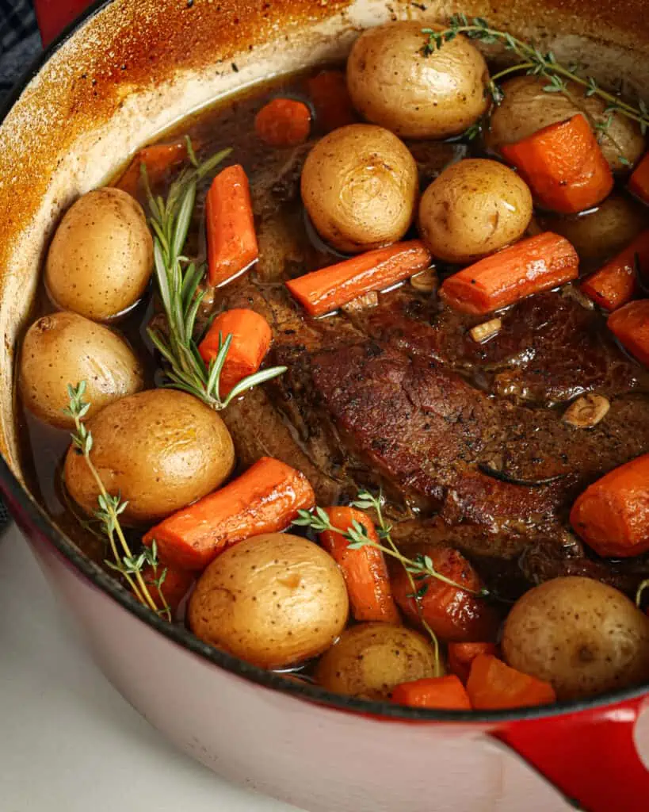

Pot Roast

Description
A slow cooker pot roast, served with carrots and potatoes.
You Will Need
- A Slow Cooker, 7qt+ preferable
- A Cast Iron Pan, at least 10 inches
Ingredients
- A large de-boned chuck roast, at least 2lbs but 3 would be better
- A pound of new potatoes
- A pound of thick baby carrots; petite-cut will not work. You may find thicker baby carrots by purchasing "organic."
- A yellow onion
- 24oz Beef Stock
- Soy Sauce
- Worchestershire Sauce
- Herbs and Spices: Thyme, Cumin, Rosemary, Kosher Salt
- A Bay Leaf
Steps
- Pat your roast dry, and liberally apply kosher salt to all sides.
- Sear all sides of the chuck roast in your cast iron pan. Just get it ripping hot and it should take about a minute per side.
- Roughly chop an onion, throw it in your slow cooker
- Add the potatoes on top of the onion
- Add the carrots on top of the potatoes
- On the vegetables, sprinkle thyme and rosemary, add a bay leaf, and a few shakes of soy sauce and worchestershire
- Place the beef roast on top of the carrots. Don't bother trying to mix anything in.
- Pour the beef stock over the beef. Stop if it comes halfway up the side of the meat, otherwise add it all. The vegetables and beef will add more liquid.
- Cover the beef with a few sprinkles of cumin.
- Cook on low for 6-8 hours.